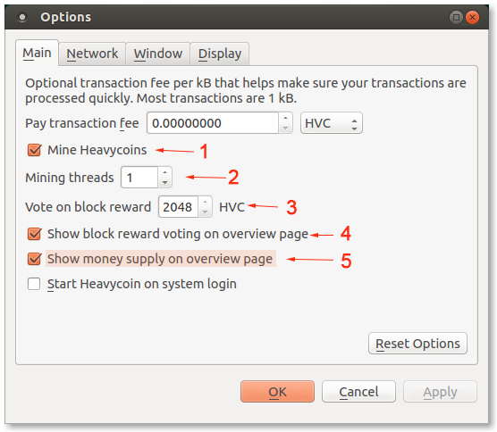
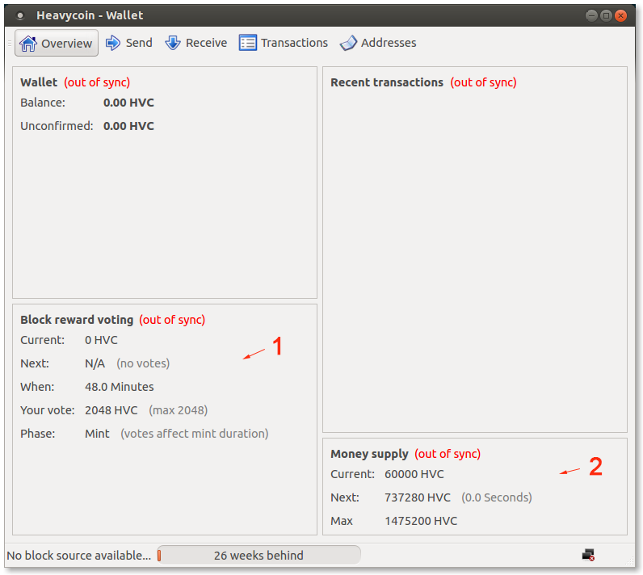

To enable voting set your block reward vote and then enable mining.
Step #1: Setup the Heavycoin wallet.
Download the heavycoin-qt wallet if you did not do this already. Install it and let it sync.
Step #2: Go to the options in your wallet.

F 2: Heavycoin Voting Controls
To set your block reward vote update field 3 - "Vote on block reward".
Step #3: Enable mining
Check box (1) - "Mine Heavycoins" and select number of threads you wish to use for mining in field (2) - "Mining threads".
You can keep track of current voting and money supply by showing detailed information on overview page of your Heavycoin wallet.
Step #1: Setup overview page
To show information about voting select box (4) - "show block reward voting on overview page"
To show information about money supply select box (5) - "show money supply on overview page"

Figure 3: Heavycoin Voting Overview
"Block reward voting" - section 1
- Current - current block reward
- Next - estimated next block reward, based on decentralised voting
- When - estimated time remaining until the votes are tallied and we change to the next block reward
- Your vote - your block reward vote
- Phase - Mint, Limit, Sustain
"Money supply" - section 2
- Current - current money supply
- Next - next target
- Max - maximum possible money supply
For a detailed explenation of voting and what it affects have a look at how voting works.
The following RPC interface has been added for voting.
- setvote <vote> - Set your block reward vote. The parameter is an integer between 0 and the maximum permitted vote for the given phase of voting.
- getvote - Returns the current block reward vote setting.
- getreward - Returns the current block reward, which has been decided democratically in the previous round of block reward voting.
- getsupply - Returns the current money supply.
- getmaxmoney - Returns the maximum possible money supply.
Happy voting!